An ABAQUS-MATLAB tutorial for Jointed Systems
Table of Contents
1. Introduction
This tutorial has been prepared to help researchers get started with modeling jointed systems for use in nonlinear vibration contexts. A three-bolted lap joint system known as the Brake-Reu{\ss} Beam (read more about the benchmark here) is used for the demonstrations. We will start with making the model using CAD and go all the way to doing a simple nonlinear prestress calculation.
It is understood that not everyone will be interested in each step of the tutorial, so intermediate files are saved and are available in the repository. This should help the reader start at any desired intermediate step.
Here is an overview of the sections and their contents:
Preprocessing (cref:sec:prepro): discusses the CAD modeling (cref:sec:modeling) of the parts along with necessary set creation (cref:sec:setcreat). Of particular note here is the realization of bolt prestress (see more in cref:sec:boltprel), which is done in a manner that is most convenient for linear and nonlinear vibration simulations including prestress effects.
The model at the end of this step can be found in model_step0.cae.
Constraints (cref:sec:constr): discusses the relevant constraints for the tied interfaces (washers are fully tied, for instance), and the bolt preload realization (cref:sec:boltprel).
The model at the end of this step can be found in model_step1.cae.
Meshing (cref:sec:meshing): discusses the seeded meshing procedure. This section also includes instructions for an optional abaqus static prestress simulation (cref:sec:abqprs) that can be used to verify the correctness of the model so far.
The model at the end of this step can be found in model_step1a.cae. Additionally, model_step2.cae is also available, which includes the above prestress test.
- Mesh Process (cref:sec:meshproc): discusses processing the mesh and includes selection of an output node, reorganization of node sets (so that the bottom interface nodes are right below the top), and provides instructions on setting up the Hurty/Craig-Bampton (HCB) procedure. It ends with instructions to run the job required for generating substructured matrices.
- Matrix Extraction (cref:sec:mex): discusses the format of the outputted matrix and provides a bash-python script to postprocess it (cref:sec:bscr). Additionally a MATLAB/Octave tutorial is provide (cref:sec:nlan) which conducts nonlinear prestress analysis with sub-100 lines of code. The model at the end of everything can be found in model_step3.cae.
Relative Coordinates Pipeline (cref:sec:relcsp): discusses the pipeline that needs to be followe in ABAQUS for using relative coordinate DOFS. This provides an ~2x reduction in model size without any approximations, and is therefore recommended always. This is presented as a separate section since it requires some experience with ABAQUS before following all the steps that are involved here.
When the relative coordinate DOFs format is desired, cref:sec:meshproc and cref:sec:mex don't need to be followed. This can be substituted completely with cref:sec:relcsp.
- Outro/Contact (cref:sec:outro): Concludes the tutorial, giving contact information of the authors, etc.
1.1. Outline Presentation
The following presentation was delivered at the monthly seminar series of the International Committee of Jointed Structures in March 2025. It provides an overview of the tutorial. You can find the file in the repository here.
2. Preprocess
The Brake-Reuß Beam (BRB) is a 3-bolted lap-joint beam which will serve as our tutorial joint structure (read more about the benchmark here). To make the tutorial self-contained, the tutorial will begin with CAD-modeling of the BRB in ABAQUS and take you all the way to matrix extraction and nonlinear dynamics analysis on MATLAB/OCTAVE. Buckle up! :)
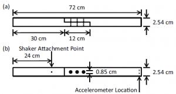
Figure 1: Geometry of the BRB Benchmark
A picture of the parts of the BRB is shown in Fig. 1 and this will be used to guide the modeling here. Standard 5/16 bolt-nut-washers will be used for the assembly. Since Bolt thread interactions won't be modeled here, the bolt shank is modeled as a smooth cylinder (see cref:sec:boltprel for more details on bolt prestress modeling).
Note: If you already have a model of your structure and want to just apply the node-selection/matrix extraction, you can safely ignore the sections particular to the modeling of the BRB and just go through the remaining, whose instructions are quite general. The general principles in the modeling section are, however, recommended for all jointed structure modeling.
2.1. A Note on Python Scripting Script
ABAQUS Python scripting is quite powerful and will be used quite liberally throughout this tutorial. The following are some tips/tricks to get started for beginners:
- For beginners, the easiest way to start scripting is to open up CAE (the GUI) and do the necessary tasks. ABAQUS would have saved the actions in a Python file called
abaqus.rpy. This is just python code that can be imported into ABAQUS to repeat the same tasks. All standard python commands work so this makes it very helpful. - On Windows the work directory may be an unfamiliar concept (on Linux it is just the directory from which ABAQUS is launched). This directory can be manually set by
File->Set Work Directory, following which all the files (including theABAQUS.rpyfile) will be put in the specified folder. - Fig 2 shows a pictorial overview of the different options available in ABAQUS for scripting support. The ABAQUS PDE can be used for ABAQUS python script development.
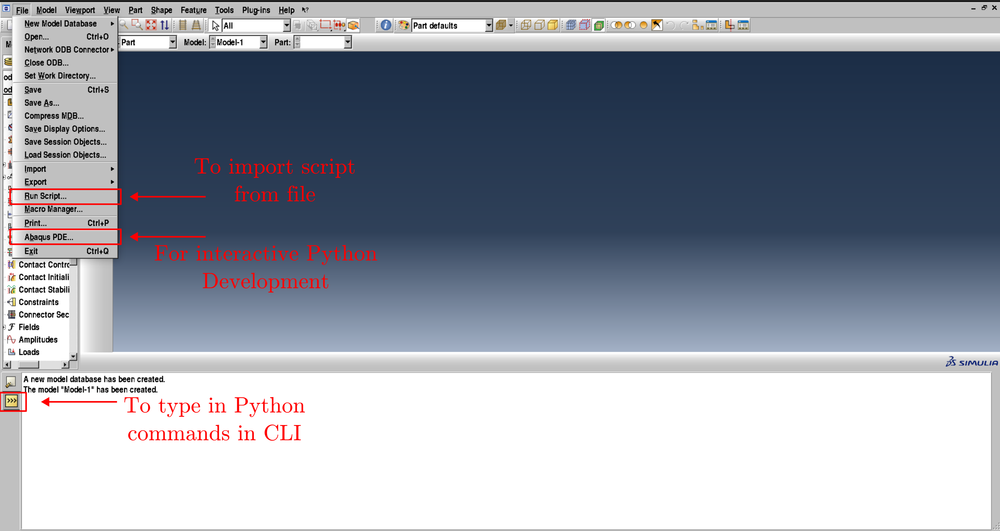
Figure 2: Options in ABAQUS for Scripting
2.2. Modeling Parts Script GUI
We will first model the two "halves" of the BRB. The following steps enumerate the process (can be skipped if you already have a model).
We will do the construction through ABAQUS Python code that can be imported through File->Run Script or just typed into the command line.
First import the following code to import all the necessary objects and then the material properties (steel, here).
1: # -*- coding: utf-8 -*- 2: import sys 3: 4: from part import * 5: from material import * 6: from section import * 7: from assembly import * 8: from step import * 9: from interaction import * 10: from load import * 11: from mesh import * 12: from optimization import * 13: from job import * 14: from sketch import * 15: from visualization import * 16: from connectorBehavior import * 17: 18: mdl = mdb.models['Model-1'] 19: ############################## 20: # MATERIAL PROPERTIES: STEEL # 21: ############################## 22: mdl.Material(name='STEEL') 23: 24: steel = mdl.materials['STEEL'] 25: steel.Density(table=((7800.0, ), )) 26: steel.Elastic(table=((2e11, 0.29),)) 27: mdl.HomogeneousSolidSection(material='STEEL', name= 28: 'Section-1', thickness=None)
The above code creates a new material called "STEEL", with Young's Modulus 200GPa, Poisson's ratio 0.29, and density 7800 kg/m3.
Now use the following to model the half beam (this can be done on CAE with the GUI quite easily).
29: mdl = mdb.models['Model-1'] 30: 31: ################### 32: # PART : HALFBEAM # 33: ################### 34: # 1. Sketch and Extrude 35: mdl.ConstrainedSketch(name='__profile__', sheetSize=2.0) 36: sktch = mdl.sketches['__profile__'] 37: sktch.Line(point1=(-36e-2, 1.27e-2), point2=(-6e-2, 1.27e-2)) 38: sktch.Line(point1=(-6e-2, 1.27e-2), point2=(-6e-2, 0)) 39: sktch.Line(point1=(-6e-2, 0), point2=(6e-2,0)) 40: sktch.Line(point1=(6e-2,0), point2=(6e-2,-1.27e-2)) 41: sktch.Line(point1=(6e-2,-1.27e-2), point2=(-36e-2,-1.27e-2)) 42: sktch.Line(point1=(-36e-2,-1.27e-2), point2=(-36e-2,1.27e-2)) 43: 44: mdl.Part(dimensionality=THREE_D, name='HALFBEAM', type=DEFORMABLE_BODY) 45: hfbm = mdl.parts['HALFBEAM'] 46: hfbm.BaseSolidExtrude(depth=25.4e-3, sketch=sktch) 47: del sktch 48: 49: # 2. Cut out Holes 50: mdl.ConstrainedSketch(name='__profile__', sheetSize=2.0, 51: transform= 52: hfbm.MakeSketchTransform( 53: sketchPlane=hfbm.faces[2], 54: sketchPlaneSide=SIDE1, 55: sketchUpEdge=hfbm.edges[8], 56: sketchOrientation=RIGHT, 57: origin=(0.0, 0.0, 1.27e-2))) 58: sktch = mdl.sketches['__profile__'] 59: cs = [-3e-2, 0.0, 3e-2]; 60: gs = [] 61: for i in range(3): 62: gs.append(sktch.CircleByCenterPerimeter(center=(cs[i], 0), 63: point1=(cs[i]+0.85e-2/2, 0))) 64: 65: hfbm.CutExtrude(sketchPlane=hfbm.faces[2], sketchPlaneSide=SIDE1, 66: sketchUpEdge=hfbm.edges[8], 67: sketchOrientation=RIGHT, sketch=sktch) 68: 69: 70: # 3. Partition object 71: hfbm.PartitionCellByExtendFace(cells=hfbm.cells, 72: extendFace=hfbm.faces[6]) 73: hfbm.PartitionCellByExtendFace(cells=hfbm.cells, 74: extendFace=hfbm.faces[7]) 75: 76: mdl.ConstrainedSketch(name='__profile__', sheetSize=2.0, 77: gridSpacing=30e-3, transform= 78: hfbm.MakeSketchTransform( 79: sketchPlane=hfbm.faces[11], 80: sketchPlaneSide=SIDE1, 81: sketchUpEdge=hfbm.edges[27], 82: sketchOrientation=RIGHT, 83: origin=(0.0, 0.0, 1.27e-2))) 84: sktch = mdl.sketches['__profile__'] 85: cs = [-3e-2, 0.0, 3e-2]; 86: wor = i2m*0.34375 87: for i in range(3): 88: sktch.CircleByCenterPerimeter(center=(cs[i], 0), 89: point1=(cs[i]+wor, 0)) 90: hfbm.PartitionCellBySketch(cells=hfbm.cells, sketch=sktch, 91: sketchUpEdge=hfbm.edges[27], 92: sketchPlane=hfbm.faces[11]) 93: hfbm.PartitionCellByExtrudeEdge(cells=hfbm.cells, edges=hfbm.edges[0], 94: line=hfbm.edges[-1], sense=FORWARD) 95: hfbm.PartitionCellByExtrudeEdge(cells=hfbm.cells, edges=hfbm.edges[3], 96: line=hfbm.edges[-1], sense=FORWARD) 97: hfbm.PartitionCellByExtrudeEdge(cells=hfbm.cells, edges=hfbm.edges[6], 98: line=hfbm.edges[-1], sense=FORWARD) 99: 100: pt = hfbm.InterestingPoint(edge=hfbm.edges[-2], rule=MIDDLE) 101: hfbm.PartitionCellByPlanePointNormal(cells=hfbm.cells, point=pt, 102: normal=hfbm.edges[-2]) 103: 104: pt = hfbm.InterestingPoint(edge=hfbm.edges[75], rule=MIDDLE) 105: hfbm.PartitionCellByPlanePointNormal(cells=hfbm.cells, point=pt, 106: normal=hfbm.edges[75]) 107: 108: pt = hfbm.InterestingPoint(edge=hfbm.edges[39], rule=MIDDLE) 109: hfbm.PartitionCellByPlanePointNormal(cells=hfbm.cells, point=pt, 110: normal=hfbm.edges[39]) 111: 112: pt = hfbm.InterestingPoint(edge=hfbm.edges[85], rule=MIDDLE) 113: hfbm.PartitionCellByPlanePointNormal(cells=hfbm.cells, point=pt, 114: normal=hfbm.edges[85]) 115: 116: pt = hfbm.InterestingPoint(edge=hfbm.edges[39], rule=MIDDLE) 117: hfbm.PartitionCellByPlanePointNormal(cells=hfbm.cells, point=pt, 118: normal=hfbm.edges[39]) 119: 120: pt = hfbm.InterestingPoint(edge=hfbm.edges[41], rule=MIDDLE) 121: hfbm.PartitionCellByPlanePointNormal(cells=hfbm.cells, point=pt, 122: normal=hfbm.edges[41]) 123: 124: pt = hfbm.InterestingPoint(edge=hfbm.edges[111], rule=MIDDLE) 125: hfbm.PartitionCellByPlanePointNormal(cells=hfbm.cells, point=pt, 126: normal=hfbm.edges[111]) 127: 128: pt = hfbm.InterestingPoint(edge=hfbm.edges[135], rule=MIDDLE) 129: hfbm.PartitionCellByPlanePointNormal(cells=hfbm.cells, point=pt, 130: normal=hfbm.edges[135]) 131: 132: # 4. Assign Material 133: regn = hfbm.Set(cells=hfbm.cells, name='Set-1') 134: hfbm.SectionAssignment(region=regn, sectionName='Section-1')
Scripting note
You can see that certain faces and edges were used in the above.
A quick way to check which face is what will be to use the highlight command on the ABAQUS python console.
Here is an example:

At the end of this step, you should have a partitioned part that looks like this. The partitioning is done in this way to help with the seeded meshing, constraint enforcement, etc.
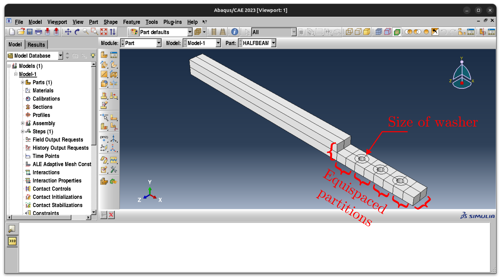
IMPORTANT! Geometry Correction Note
You have to ensure that the curved edges on the above are, indeed, single edges. You will run into meshing issues if this is not the case. If not, you will have to use the "Merge Edges" tool in the Part module and individually select each edge and merge them.

Create a Reference Point Part called
REFPT. This will be necessary for the application of bolt prestress (see cref:sec:boltprel below).135: rpt = mdl.Part(name='REFPT', dimensionality=THREE_D, 136: type=DEFORMABLE_BODY) 137: rpt.ReferencePoint(point=(0.0, 0.0, 0.0)) 138: 139: rpt.Set(name='Set-1', referencePoints=rpt.referencePoints.values())
Now import the nuts, washers and bolts by importing the file https://github.com/Nidish96/Abaqus4Joints/blob/main/scripts/c_nutwasherbolt_516.py. You should be able to see the nut, washer and bolt, along with the half beam and reference point created before, as follows after importing:
 The Python script also assigns the material "STEEL" (see above) to the parts.
The Python script also assigns the material "STEEL" (see above) to the parts.
The file model_step0.cae stores the CAE file at the end of the above steps (building parts, and partitioning).
2.3. Creating appropriate surface sets GUI
It is necessary to choose appropriate surface sets for the constraint enforcement and, eventually, the interfacial mesh extraction. Doing this with surfaces (before meshing) is advantageous since the same scripts can be reused even if the model is remeshed.
First select the interfacial faces on the half beam model and assign the name
INSURFto it. You can do this throughTools->Surface->Createand then selecting the appropriate faces through the GUI. Select the faces by holdingShiftand deselect by holdingCtrl. Here is a picture of the surface highlighted in the viewport.
Turn to the outside of the beam and select the faces around the bolts individually and name them
BmW1,BmW2, andBmW3respectively. These will be tied to the washer for the analysis. (BmWidenotes the ith Beam-Washer contact). Here is a picture of the relevant surfaces highlighted (using different colors for each).
Create two surfaces on the
BOLTmodel as shown in the figure below. Name the surface marked white asBlWand the surface marked green asBN. (BlWdenotes the Bolt-Washer contact surface;BNdenotes the Bolt-Nut contact surface)
Create two surfaces on the
NUTmodel as shown in the figure below. Name the white surface asNWand the green surface asNB. (NWdenotes the Nut-Washer contact surface;NBdenotes the Nut-Bolt contact surface) Note the direction axes carefully.
Create two surface on the
WASHERmodel and label them asWSTOPandWSBOT(short for Washer-Surface Top and Bottom). Here is a graphical depiction of the model with the surfaces.
Now all the parts have been created and relevant surfaces have been identified. Note: It is important to have traceable but short names so that a lot of the repetitive tasks can be sped up considerably using scripting.
2.4. Create Assembly GUI
Note: While importing the parts, choose Instance Type as "Independent (Mesh on Instance)". This will be advantageous if we want to modify the meshes just at the interface for mirror symmetry. We will do independent meshing since it is good practice, although independent meshes are not a requirement for this example (dependent meshes can be used due to symmetry).
Import the two beams and re-orient/move them as follows. Note that the bolt-axis has to be pointed in the +z direction. This will be the convention followed throughout this tutorial. The green beam in the following is renamed as
TOPBEAMand the white beam in the following is renamed asBOTBEAM.
Import one instance each of the
BOLTandNUTand 2 instances of theWASHERand assemble them as shown. Ensure that the washer is oriented (on each side) with theWSTOPoriented in the-zdirection and theWSBOTis oriented in the+zdirection. Rename the washer instances in the top and bottom asTOPWASHER-1andBOTWASHER-1respectively. Rename the bolt and nut asNUT-1andBOLT-1respectively.
Import one instance of the reference point
REFPT. As mentioned before, this will be used to enforce bolt prestress. This will be achieved by first placing it at the centroid of the intersection of theBOLTandNUT(surfacesBNandNB). It is important that the reference point is placed at the centroid. This can be done in the GUI by first moving it to an external point and then translating it along the axis. The figure below shows an example (a datum point was used for this here). Rename this toBPT-1(standing for Bolt Point 1).
- Now import another instance of the reference point
REFPTand translate it to be coincident withBPT-1. Rename thisNPT-1(standing for Nut Point 1). These two points will have to be on the same geometrical point but equal and opposite forces will be applied for the force application (see cref:sec:boltprel below for those steps). The pointBPT-1will be coupled to the bolt surfaceBNandNPT-1will be tied to the nut surfaceNBthrough RBE3 elements. Use the "Linear Pattern" dialog and copy the bolt-washer-washer-nut assembly thrice along the beam such that the assembly is complete. The figure below shows the final assembly along with a representation of the names of the different parts. Recall that the beam shown in the figure below is
TOPBEAMand the hidden one isBOTBEAM.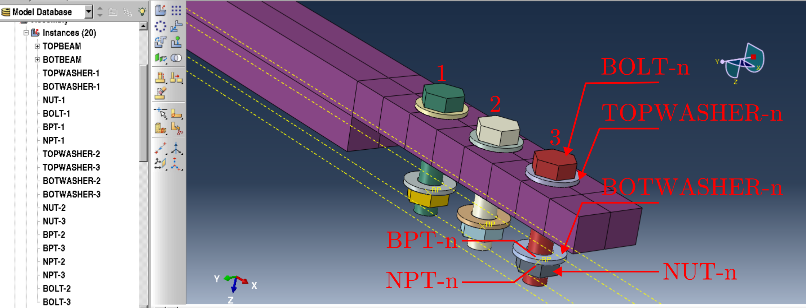
Now that the assembly is complete, the relevant constraints will have to be enforced, followed by a realization of the bolt preload.
3. Constraints
3.1. Tie-Constraint Enforcement Script GUI
All the following operations can be conducted in the Interaction module in CAE.
But since selecting each surface can be a time-consuming process, we use the following for-loop in ABAQUS-python (either call it as a script or just copy paste it into the CLI) to make the required tie constraints.
Specifically, it ties the Bolt-Washer, Nut-Washer, and Washer-Beam surfaces.
Note that in the last set of constraints, we recall the fact that the bottom beam is flipped.
So WASHER-1 is tied to BmW3 of the bottom beam (and so on for 2,3).
1: mdl = mdb.models['Model-1'] 2: ras = mdl.rootAssembly 3: 4: for i in range(1, 4): 5: # Bolt-Washer Constraints 6: mdl.Tie(name='BW-%d' %(i), 7: main=ras.instances['TOPWASHER-%d' %(i)].surfaces['WSTOP'], 8: secondary=ras.instances['BOLT-%d' %(i)].surfaces['BlW'], 9: positionToleranceMethod=COMPUTED, adjust=ON, 10: tieRotations=ON, thickness=ON) 11: 12: # Nut-Washer Constraints 13: mdl.Tie(name='NW-%d' %(i), 14: main=ras.instances['BOTWASHER-%d' %(i)].surfaces['WSBOT'], 15: secondary=ras.instances['NUT-%d' %(i)].surfaces['NW'], 16: positionToleranceMethod=COMPUTED, adjust=ON, 17: tieRotations=ON, thickness=ON) 18: 19: # TopWasher-Beam Constraints 20: mdl.Tie(name='BmTW-%d' %(i), 21: main=ras.instances['TOPBEAM'].surfaces['BmW%d' %(i)], 22: secondary=ras.instances['TOPWASHER-%d' %(i)].surfaces['WSBOT'], 23: positionToleranceMethod=COMPUTED, adjust=ON, 24: tieRotations=ON, thickness=ON) 25: 26: # BotWasher-Beam Constraints 27: mdl.Tie(name='BmBW-%d' %(i), 28: main=ras.instances['BOTBEAM'].surfaces['BmW%d' %((3-i)%3+1)], 29: secondary=ras.instances['BOTWASHER-%d' %(i)].surfaces['WSTOP'], 30: positionToleranceMethod=COMPUTED, adjust=ON, 31: tieRotations=ON, thickness=ON)
3.2. Bolt Preload Realization Script GUI
You might already have encountered the different parts of the model above that were carefully constructed for the bolt preload application (bolt-shank partitioning, reference points, etc.).
What 's wrong with the inbuilt Bolt Pretension in ABAQUS?
The ABAQUS Approach
- You can find the ABAQUS documentation for the bolt load here.
- ABAQUS/CAE applies bolt load by specifying a bolt cross-section, a bolt axis, and the bolt load.
- The documentation for the ABAQUS implementation can be found here.
- The load is applied in the context of a constraint:
- It can be a load constraint wherein the displacements/strains at the cross-section are adjusted to match the load.
- It can be a deformation constraint, wherein the loads are adjusted.
- In either case, the bolt load can not be written down as a constant load vector that can be exported/used elsewhere.
- It is therefore not possible to use the inbuilt bolt pretension in a substructured analysis, for example.
- Here are the documented limitations:
- An assembly load cannot be specified within a substructure.
- If a submodeling analysis is performed, any pre-tension section should not cross regions where driven nodes are specified.
- Nodes of a pre-tension section should not be connected to other parts of the body through multi-point constraints.
Our Approach
- Our method of bolt pretension application addresses all the above issues pertaining to substructuring/submodeling by using Distributed Coupling elements (aka RBE3/Spider elements in other FE software).
- We will first couple the bolt-shank area that is in contact with the nut (the thread area) to a 6DOF point (3 translations + 3 rotations), and do the same for the nut inner surface, with another point, using Distributed coupling elements.
- The bolt and nut will be "fastened" by arresting every DOF in these two nodes except the axial DOF. This will ensure that the only relative displacement between the bolt and nut are axial, which may result from tightening/loosening of the bolt.
- A "pulling force" is applied on the bolt-coupling node, which acts as the tension on the bolt, and a "pushing force" is applied on the nut-coupling node, which acts to maintain the system's equilibrium, i.e., fastening.
- It is understood that there is an interface that the assembly is tightening, which should provide the required reaction forces to balance everything out.
- Now, the bolt load is merely a constant force vector which can be manipulated as one desires.
We will now go through the process of specifying this.
First couple the bolt-shank surface
BNwith the appropriate reference point (BPT-n). This can be done in CAE throughInteraction->Create Constraint->Tie. The following is python code that will do this in a loop.32: # Bolt and Nut Point Coupling 33: for i in range(1, 4): 34: mdl.Coupling(name='BPC-%d' %(i), 35: controlPoint=ras.instances['BPT-%d' %(i)].sets['Set-1'], 36: surface=ras.instances['BOLT-%d' %(i)].surfaces['BN'], 37: influenceRadius=WHOLE_SURFACE, couplingType=STRUCTURAL, 38: weightingMethod=UNIFORM) 39: 40: mdl.Coupling(name='NPC-%d' %(i), 41: controlPoint=ras.instances['NPT-%d' %(i)].sets['Set-1'], 42: surface=ras.instances['NUT-%d' %(i)].surfaces['NB'], 43: influenceRadius=WHOLE_SURFACE, couplingType=STRUCTURAL, 44: weightingMethod=UNIFORM)
Now we constrain the X, Y, Rx, Ry, and Rz DOFs (all 5 DOFs other than the Z DOF, which is the bolt-axis) using equation constraints. If the bolt axis is not a principal direction in the model, then the constraint equations must be modified appropriately. Note that this can also be used in the large deformation context through the use of a local coordinate system (the global CS is used here, so applicability is restricted to small deformations). This can be done in CAE through
Interaction->Create Constraint->Coupling. The following code does this through a nested loop such thatBNEQn-mrepresents the mth DOF constraint at the nth location.45: # Equation Constraints constraining bolt and nut ref-points to each other 46: for i in range(1, 4): 47: for j in [1, 2, 4, 5, 6]: 48: mdl.Equation(name='BNEQ%d-%d' %(i, j), 49: terms=((1.0, 'BPT-%d.Set-1' %(i), j), 50: (-1.0,'NPT-%d.Set-1' %(i), j)))
Here is an image showing the constraints applied graphically.

We next create a static analysis step (
Step->Create Step->Static, General) named asPRESTRESS. This can be done in CAE, but here is the Python code.51: mdl.StaticStep(name='PRESTRESS', previous='Initial', nlgeom=ON)
Note: Nonlinear Geometric effects (nlgeom) is set to ON since this was found to be helpful for convergence of prestress analysis.
We finally apply bolt forces as concentrated forces at the
BPT-nandNPT-nreference points. Switch to theLoadmodule to do this from CAE. The following python code applies a tightening load of 12kN to each bolt.52: # Apply forces 53: bpmag = 12e3 # 12kN bolt-load 54: for i in range(1, 4): 55: # Force in +z on bolt-points 56: mdl.ConcentratedForce(name='BoltLoad-%d' %(i), createStepName='PRESTRESS', 57: region=ras.instances['BPT-%d' %(i)].sets['Set-1'], 58: cf3=bpmag, distributionType=UNIFORM) 59: 60: # Force in -z on bolt-points 61: mdl.ConcentratedForce(name='NutLoad-%d' %(i), createStepName='PRESTRESS', 62: region=ras.instances['NPT-%d' %(i)].sets['Set-1'], 63: cf3=-bpmag, distributionType=UNIFORM)
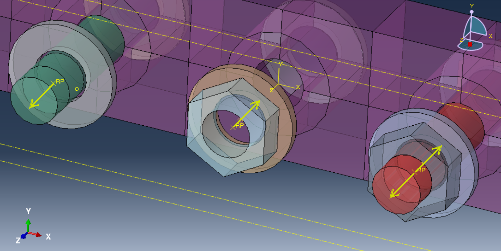
- Note that the bolt load constructed in the above manner is a "linear" load - i.e., the load can be increased/decreased by scaling the resulting force vector.
It is assumed here that all 3 bolts are loaded equally.
If this is not the case, the different loads can be exported separately and scaled appropriately (for external analysis).
It is, however, a physical requirement for equilibrium that
BoltLoad-nandNutLoad-nhave to be of equal magnitude and opposite signs.
The file model_step1.cae stores the CAE-file generated after the end of the above steps. We will now proceed with meshing.
4. Meshing
Since the model is perfectly symmetric, it is sufficient to mesh the model with a global seed, after seeding the interface area locally.
Switch to the Mesh module for this section.
If such symmetry is not available, one may choose a more direct approach by using the bottom-up meshing to copy the mesh from one interface to another directly.
Please write to me if you'd like an example for this.
4.1. Meshing Instructions GUI
Choose
Mesh->Assign Mesh Controlsand select the whole assembly (all the instances). We will use a structured hex-dominated element type for the full model (it will give a warning that this is not possible for certain regions. This is okay).
Now choose
Mesh->Seed Part Instanceand select all the instances again. Set 0.00254 as the global mesh seed (to ensure 10 elements across thickness) and 0.05 for curvature control.
Apply local seeds at the interface as shown here (on both interfaces). Use the
Mesh->Seed Edgestool by choosing the Method as "By Number" and specify the number of elements.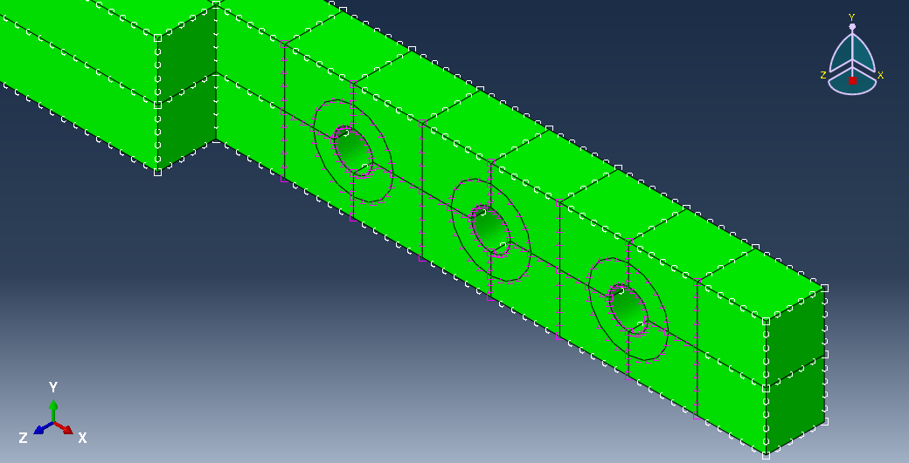
Now mesh the assembly using
Mesh->Mesh Part Instanceand selecting all the part instances. Here is a view of the interfacial mesh you should get after the above seeding.
Here is an image of the total assembly with the mesh.

The file model_step1a.cae stores the CAE-file along with the mesh.
4.2. (Optional, recommended) Verify correctness of model through frictionless prestress GUI
We will now conduct a simple frictionless contact analysis to verify the correctness of the model.
Setup
For the static prestress analysis, first a surface-to-surface contact interaction property has to be created and assigned. You can do this from CAE starting from
Interaction->Create Interactionand following the steps in the figure below.
Now create two linear frequency steps, one before and one after the static prestress step, as shown in the figure below. Request 30 eigenvalues in each case.
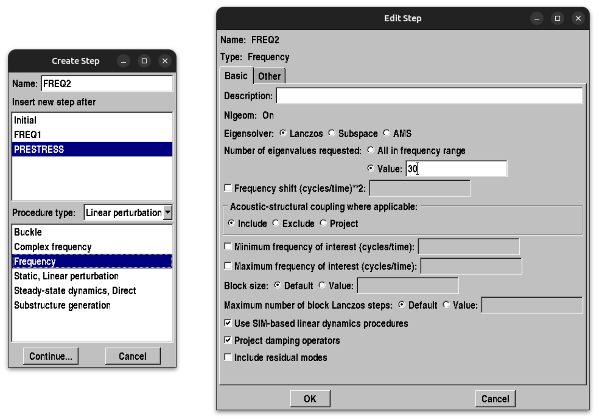
Create 2 jobs. Suppress the interaction property in the first one and have just
FREQ1active (see figure below).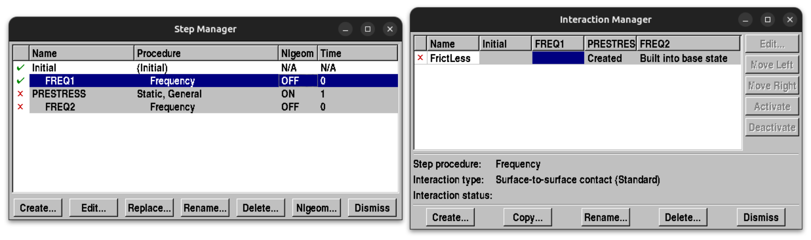 For the second job, suppress
FREQ1and resume the other steps. Resume the surface interaction properties (see figure below).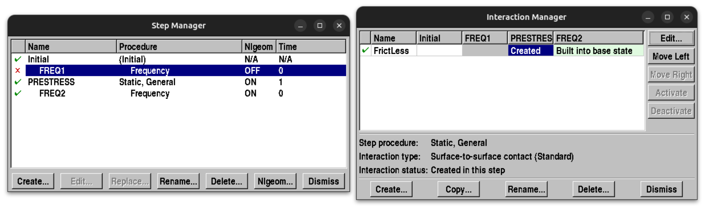 Optionally, field outputs for
FREQ2(by default it will be set to none ifFREQ1is suppressed). You can do this inStep->Create Field Outputs.
Results
The first analysis should reveal that the system has 7 Rigid Body Modes (RBMs). This is because the two beams are constrained together in all directions except the axial (where tightening has to happen). So the number of RBMs has to be \(2\times 6 - 5 = 7\). The first 10 modal frequencies have to be (frequencies in cycles/time, or Hz):
Index Frequency 1 1.0515e-3 2 1.2851e-3 3 1.4602e-3 4 1.6246e-3 5 1.6592e-3 6 1.8082e-3 7 1.9025e-3 8 70.323 9 151.26 10 609.25 In the above, modes 1-7 are RBMs and modes 8 onwards are the elastic modes. Looking at the mode-shapes should make it clear that the two beams are free to move axially (the following is mode 1, for eg).

The second analysis should converge within a few iterations. If not, the "Initial Increment Size" in
Step->PRESTRESS->Edit->Increment->Initial Increment Sizehas to be reduced. If it doesn't converge, try to apply a boundary condition to make the problem well-posed, and try again. If it still doesn't converge, check your model again. Here is a picture of the contact pressures at the interface at the end of the static prestress step.
By default, ABAQUS fuses the nodes that are in contact at the end of the hard contact step, for the eigenvalue analysis that follows it (Linear Perturbation step). Since we are using frictionless tangential here, the tangential DOFs are not fused. Here are the first 10 frequencies from the
FREQ2step (frequencies in cycles/time, or Hz):Index Frequency 1 0.00 2 0.00 3 0.00 4 0.00 5 0.00 6 2.2068e-3 7 141.10 8 152.42 9 570.33 10 643.49 It must be observed that the model, under the prestressed state, has only 6 RBMs. In other words, the bolt-axial direction has now been fixed due to the fact that the contact constraints are active on at least one spot on the interface.
- If your model passes all the above, then you are ready to proceed.
- Note, however, that this does not imply accuracy of the model. One would have to do a mesh convergence analysis in this case. For contact problems, it is well known that the interfacial discretization must be very fine for convergence. Much coarser meshes are, however, found to be sufficient for predicting global quantities such as natural frequency and (nonlinear) damping estimates, etc. Such a convergence analysis is presented in the appendix of this thesis.
The file model_step2.cae is the cae file containing the model with the above tests included.
5. Mesh Process
Now that the model is verified to be correct/consistent, we will proceed with the steps necessary for substructured Matrix Extraction.
Before proceeding it is necessary to first identify nodes on the meshed model that correspond to the input and output locations.
Choose the mid point on the right end as the output node for this tutorial.
Create a node set called OutNodes by selecting Mesh->Tools->Set->Create->Node and choosing the node. Select "unsorted node set" if available.
 It is possible to choose multiple nodes here if you have a MIMO case.
It is possible to choose multiple nodes here if you have a MIMO case.
It is also helpful to use global node and element indexing henceforth.
This can be specified in Model->Edit Attributes->Model-1 as follows:

5.1. Reorganize Interfacial Node Sets (readjust if necessary) Script
Although we have taken care to ensure that the mesh of the TOPBEAM and BOTBEAM are conformal at the interface, minor imperfections in the nodal locations may exist.
Furthermore, the ordering of the nodes on the top interface will be different from that on the bottom interface.
Through some scripting, we can create node sets in such a way that the top and bottom interface nodesets are ordered in a convenient fashion.
You can use the model_step1a.cae and work along if you are here just for this section.
We use the following slightly modified header for this script:
1: # -*- coding: utf-8 -*- 2: # 1. Preamble 3: import sys 4: import numpy as np 5: 6: from part import * 7: from material import * 8: from section import * 9: from assembly import * 10: from step import * 11: from interaction import * 12: from load import * 13: from mesh import * 14: from optimization import * 15: from job import * 16: from sketch import * 17: from visualization import * 18: from connectorBehavior import * 19: 20: from abaqus import * 21: from abaqusConstants import * 22: from caeModules import * 23: import regionToolset 24: import job 25: import step 26: import sets 27: 28: mdl = mdb.models['Model-1'] 29: ras = mdl.rootAssembly 30: 31: mdl.setValues(noPartsInputFile=ON)
Now we identify the top and bottom surface nodes, and store the top nodes and elements into separate variables. The node and element ordering of the top nodes will be preserved, and the nodes in the bottom will be resorted according to this in #3 below.
32: # 2. Get top and bottom surfaces and nodes 33: topsurf = ras.instances['TOPBEAM'].surfaces['INSURF'] 34: botsurf = ras.instances['BOTBEAM'].surfaces['INSURF'] 35: 36: topnodes = topsurf.nodes 37: botnodes = botsurf.nodes 38: N = len(topnodes) # Number of nodes 39: 40: # Top Nodes and Coordinates 41: Topnd_dict = dict(zip([topnodes[i].label 42: for i in range(N)], range(N))) 43: # maps original node ID (in FE model) to 44: # node ID in interface node set 45: TopNdCds = np.array([topnodes[i].coordinates 46: for i in range(N)]) 47: 48: # Top Elements 49: TopEls = np.array([topsurf.elements[i].connectivity 50: for i in range(len(topsurf.elements))]) 51: ELS = np.zeros((TopEls.shape[0], 5), dtype=int) 52: for ne in range(TopEls.shape[0]): 53: elefac = topsurf.elements[ne].getElemFaces() 54: 55: # Gives you the list of faces on the interface 56: # (we only expect a single face here) 57: fe = np.argwhere([all([Topnd_dict.has_key(x) for x in 58: [elefac[k].getNodes()[i].label 59: for i in range(4)]]) 60: for k in range(6)])[0,0] 61: ELS[ne, 0] = ne 62: # Searches for the face where all the nodes are in the interface 63: # and returns those nodes 64: ELS[ne, 1:] = [Topnd_dict[x] for x in 65: [elefac[fe].getNodes()[k].label 66: for k in range(4)]] 67: ELS[ne, :] += 1 68: 69: # Save interfacial nodes and elements to txt files 70: np.savetxt('Nodes.dat', TopNdCds) # Save to dat file 71: np.savetxt('Elements.dat', ELS, fmt='%d')
Now we extract the bottom nodes and sort them.
72: # 3. Node Pairing. We assume len(botnodes)=len(topnodes). 73: botleft = range(N) 74: bts = [] 75: tmi = 0 76: for i in range(N): 77: # Calculates deviation of selected node coordinate on bottom to each 78: # node coordinate on top and "assigns" the closest one to the index. 79: devns = topnodes[i].coordinates - np.array([botnodes[j].coordinates 80: for j in botleft]) 81: bts.append( 82: botleft.pop( 83: np.argmin( 84: np.linalg.norm( 85: devns, axis=1) 86: ) 87: ) 88: )
We now adjust the nodes on the bottom (this affects the FE mesh directly!)
89: # 4. Adjust Nodes on Bottom Beam Interface to Match Top Beam Exactly 90: for i in range(N): 91: ras.editNode(nodes=botnodes[bts[i]:bts[i]+1], 92: coordinates=(topnodes[i].coordinates,))
We now create nodesets for the top (
TOPS_NDS) and bottom (BOTS_NDS).93: # 5. Create Node Sets 94: botpairednds = botnodes.sequenceFromLabels(tuple([botnodes[i].label 95: for i in bts])) 96: # Reordering from the sorting above 97: 98: ras.SetFromNodeLabels(name="TOPS_NDS", 99: nodeLabels=((topnodes[0].instanceName, 100: tuple([topnodes[i].label 101: for i in range(N)])),), 102: unsorted=True) 103: ras.SetFromNodeLabels(name="BOTS_NDS", 104: nodeLabels=((botpairednds[0].instanceName, 105: [botpairednds[i].label 106: for i in range(len(botpairednds))]),), 107: unsorted=True)
Note that we've used the unsorted keyword to ensure that ABAQUS does not reorder the nodesets (default behavior).
We now simplify the model by removing all interaction properties and steps (except initial). One side-effect of doing this is that this removes the bolt loads also, since loads can only be saved when there is a corresponding step! So we will reintroduce the bolt loads in the substructuring step in #8 below.
108: # 6. Simplify model (remove interactions, all steps, etc.) 109: tmp = mdl.interactions 110: while len(tmp) > 0: 111: del tmp[tmp.keys()[-1]] 112: 113: tmp = mdl.interactionProperties 114: while len(tmp) > 0: 115: del tmp[tmp.keys()[-1]] 116: 117: # Remove all steps except initial 118: tmp = mdl.steps 119: while len(tmp) > 1: 120: del tmp[tmp.keys()[-1]]
5.2. Setup Fixed interface CMS (HCB-CMS) with linear frequency and substructure steps Script
We are interested in Fixed-Interface Component Mode Synthesis with 20 retained modes. So we first do a fixed interface modal analysis and request \(20\times3 = 60\) modes (for ensuring accuracy of the first 20 modes). We fix all the nodes in the nodesets
TOPS_NDSandBOTS_NDS.121: # 7. Create a Frequency Step for fixed interface modal analysis 122: mdl.FrequencyStep(name="Fixed-Int-Modal", previous="Initial", 123: normalization=MASS, eigensolver=LANCZOS, 124: numEigen=60) 125: mdl.EncastreBC(name="TOPFIX", createStepName="Fixed-Int-Modal", 126: region=ras.sets['TOPS_NDS']) 127: mdl.EncastreBC(name="BOTFIX", createStepName="Fixed-Int-Modal", 128: region=ras.sets['BOTS_NDS'])
Next, we create the substructuring step and re-specify the bolt loads (these were removed in #6 above). The bolt loads are specified of unit magnitude and can be scaled during analysis. This by default uses the mode shapes from the previous step and calculates static constraint modes automatically.
129: # 8. Create a substructuring step, specify the modes and retained DOFs 130: mdl.SubstructureGenerateStep(name="HCBCMS", previous="Fixed-Int-Modal", 131: substructureIdentifier=1, 132: retainedEigenmodesMethod=MODE_RANGE, 133: modeRange=((1, 20, 1),), 134: recoveryMatrix=REGION, 135: recoveryRegion=ras.sets['OutNodes'], 136: computeReducedMassMatrix=True) 137: 138: # The name dictates ordering. A comes before B. 139: mdl.RetainedNodalDofsBC(name="A", createStepName="HCBCMS", 140: region=ras.sets['TOPS_NDS'], 141: u1=ON, u2=ON, u3=ON) 142: mdl.RetainedNodalDofsBC(name="B", createStepName="HCBCMS", 143: region=ras.sets['BOTS_NDS'], 144: u1=ON, u2=ON, u3=ON) 145: 146: # Apply Bolt Loads (1N magnitude) 147: for i in range(1, 4): 148: mdl.ConcentratedForce(name='BoltLoad-%d' %(i), createStepName="HCBCMS", 149: cf3=1.0, 150: region=ras.instances['BPT-%d' %(i)].sets['Set-1']) 151: mdl.ConcentratedForce(name='NutLoad-%d' %(i), createStepName="HCBCMS", 152: cf3=-1.0, 153: region=ras.instances['NPT-%d' %(i)].sets['Set-1']) 154: 155: sbs = mdl.steps['HCBCMS'] 156: sbs.LoadCase(name="LCASE", 157: loads=tuple(('BoltLoad-%d' %(i), 1.0) for i in range(1, 4)) + 158: tuple(('NutLoad-%d' %(i), 1.0) for i in range(1, 4)))
Note, in the above that the ordering of the two sets is controlled by the name given to the
RetainedNodalDofsBCfunction. Although the node sets themselves are not sorted, the order in which the nodesets appear is sorted by default.We finally need to request matrix output. Here is the ABAQUS documentation for the
*Substructure Matrix Outputcard. Thus far (until version 2023) ABAQUS CAE doesn't support requesting matrix output from Substructure steps. We have to request this manually in the .inp files. Thankfully we can write to the keywords directly from CAE. Go toModel->Edit Keywords->Model-1to do this in the GUI. In scripting, this is known as a "synch" operation, which is done as follows:159: # 9. Request substructure matrix outputs 160: # ABAQUS CAE doesn't support this yet (GUI or scripting), 161: # so the keywords need to be manually modified. 162: mdl.keywordBlock.synchVersions(storeNodesAndElements=False) 163: 164: li = np.argwhere([mdl.keywordBlock.sieBlocks[i][0:20] == "*Retained Nodal Dofs" 165: for i in range(len(mdl.keywordBlock.sieBlocks))])[0][0] 166: txi = mdl.keywordBlock.sieBlocks[li] 167: mdl.keywordBlock.replace(li, "*Retained Nodal Dofs, sorted=NO"+txi[20:]) 168: 169: mdl.keywordBlock.insert(len(mdl.keywordBlock.sieBlocks)-2, 170: "*Substructure Matrix Output, FILE NAME=Modelmats, " + 171: "MASS=YES, STIFFNESS=YES, SLOAD=YES, " + 172: "RECOVERY MATRIX=YES")
We then create a job and write it to an "inp" file that can be run from ABAQUS.
173: # 10. Create a job and write an inp file 174: mdb.Job(name="Job", model='Model-1') 175: mdb.jobs['Job'].writeInput()
Here is what the final HCBCMS step looks like in this case. The most important part is the
*Substructure Matrix Outputcard in the bottom, which we introduced through the "synch" step in #3 above. Here is the ABAQUS documentation for the*Substructure Matrix Outputcard.1: ** ---------------------------------------------------------------- 2: ** 3: ** STEP: HCBCMS 4: ** 5: *Step, name=HCBCMS, nlgeom=NO 6: *Substructure Generate, overwrite, type=Z1, recovery matrix=YES, 7: nset=OutNodes, mass matrix=YES 8: *Select Eigenmodes, generate 9: 1, 20, 1 10: *Damping Controls, structural=COMBINED, viscous=COMBINED 11: *Retained Nodal Dofs, sorted=NO 12: BOTS_NDS, 1, 3 13: TOPS_NDS, 1, 3 14: ** 15: ** LOAD CASES 16: ** 17: *Substructure Load Case, name=LCASE 18: ** Name: BoltLoad-1 Type: Concentrated force Scale factor: 1 19: *Cload 20: BPT-1_Set-1, 3, 1. 21: ** Name: BoltLoad-2 Type: Concentrated force Scale factor: 1 22: *Cload 23: BPT-2_Set-1, 3, 1. 24: ** Name: BoltLoad-3 Type: Concentrated force Scale factor: 1 25: *Cload 26: BPT-3_Set-1, 3, 1. 27: ** Name: NutLoad-1 Type: Concentrated force Scale factor: 1 28: *Cload 29: NPT-1_Set-1, 3, -1. 30: ** Name: NutLoad-2 Type: Concentrated force Scale factor: 1 31: *Cload 32: NPT-2_Set-1, 3, -1. 33: ** Name: NutLoad-3 Type: Concentrated force Scale factor: 1 34: *Cload 35: NPT-3_Set-1, 3, -1. 36: *Substructure Matrix Output, FILE NAME=Modelmats, MASS=YES, 37: STIFFNESS=YES, SLOAD=YES, RECOVERY MATRIX=YES 38: *End Step
You can find the inp-file generate from the above in Job.inp.
5.3. Run Job and Generate the mtx file. Script GUI
You can now run the Job named "Job" in the GUI, or directly run the "Job.inp" file from the command line using
abaqus job=Job inp=Job.inp cpus=2 interactive
Once the job is done, it will output the matrix file "Modelmats.mtx" into the working directory. This, along with the "Nodes.dat" and "Elements.dat" files that were written out earlier, are all we need for external analyses.
6. Matrix Extraction + NL-Analysis
By default, ABAQUS uses the matrix market format for the outputted matrices. Note the following, in terms of format:
- Each line that starts with an asterix ("*") is a comment.
- The linear matrices of the current model are fully symmetric.
- So only the upper triangular parts of the matrices are exported.
- The load vector is exported as a vector.
- Columns of the recovery matrix \(R\), defined by \[ x_{out} = R x_{cms} \] where \(x_{cms}\) is the vector of DOFs of the CMS model (substructure) and \(x_{out}\) are the output DOFs. Each column of \(R\) is \(N_{out}\times 1\), and \(R\) is \(N_{out}\times N_{cms}\).
6.1. Postprocessing Exported Matrices Script
- The first few lines provide the generalized coordinates of the model. The nodes are listed as positive integers and the "modal" DOFs are listed as negative integers. This is followed by a list of DOFs active in each set.
The STIFFNESS and MASS matrices are respectively prepended by
* MATRIX,TYPE=STIFFNESS <Stiffness matrix entries in upper triangular form> * MATRIX,TYPE=MASS <Mass matrix entries in upper triangular form>
The load vector (the bolt prestress load, here) is written as,
** SUBSTRUCTURE LOAD CASE VECTOR. SLOAD CASE <name> ***CLOAD ** 1, 1, <entry> ** 1, 2, <entry> ** 1, 3, <entry> . . .
Finally, the recovery matrix is provided row-by-row as
* SUBSTRUCTURE RECOVERY VECTOR CORRESPONDING TO RETAINED DOFS NUMBER 1 <entries> * SUBSTRUCTURE RECOVERY VECTOR CORRESPONDING TO RETAINED DOFS NUMBER 2 <entries> . . .
- In the actual file, the order is STIFFNESS, LOAD, MASS, then SUBSTRUCTURE.
The following Bash script processes the output (a stiffness, a mass, a load case, and recovery entries are expected)
1: #!/bin/sh 2: 3: if [ $# = 2 ] 4: then 5: echo "Correct call!" 6: OUT=$2 7: elif [ $# = 1 ] 8: then 9: echo "Acceptable call!" 10: a="$1" 11: OUT="${a%.*}.mat" 12: else 13: echo "Wrong call - quitting!" 14: fi 15: echo "Preprocessing mtx files" 16: awkcmd1='BEGIN{mstart=0;} 17: ($1~/^\*M/){mstart++; next} 18: (mstart==1){if($1!~/^\*/){print}else{exit}}' 19: awkcmd2='BEGIN{RS=",";ORS="\n"}{print}' 20: gawk "$awkcmd1" $1|gawk "$awkcmd2"|gawk '(NF!=0){print}' > ./.STIFFNESS.mtx 21: 22: awkcmd1='BEGIN{mstart=0;} 23: ($1~/^\*M/){mstart++; next} 24: (mstart==2){if($1!~/^\*/){print}else{exit}}' 25: awkcmd2='BEGIN{RS=",";ORS="\n"}{print}' 26: gawk "$awkcmd1" $1|gawk "$awkcmd2"|gawk '(NF!=0){print}' > ./.MASS.mtx 27: 28: awkcmd1='BEGIN{vstart=0;} 29: ($0~/^\*\*\*C/){vstart++; next} 30: (vstart>0){print $2,$3,$4} 31: (vstart>0 && $1!~/^\*\*/){exit}' 32: awkcmd2='BEGIN{FS=","} 33: {for(i=1;i<=NF;i++) 34: printf("%s ", $i); 35: printf("\n")}' 36: gawk "$awkcmd1" $1|gawk "$awkcmd2" > ./.FVEC.mtx 37: 38: awkcmd1='BEGIN{rstart=0} 39: ($0~/^\*\* SUBSTRUCTURE REC/){rstart++; 40: if(rstart>1){printf("\n")} 41: next} 42: (rstart!=0 && $1~/\*\*/){ 43: for(i=2;i<=NF;i++)printf("%s",$i);}' 44: awkcmd2='BEGIN{FS=","} 45: {for(i=1;i<=NF;i++) 46: printf("%s ",$i); 47: printf("\n");}' 48: gawk "$awkcmd1" $1|gawk "$awkcmd2" > .RECOV.mtx 49: 50: echo "Preprocessing mtx files done" 51: 52: python <<EOF 53: import numpy as np 54: import scipy.io as io 55: 56: print("Reading Mass Matrix from mtx file."); 57: Mv = np.loadtxt('.MASS.mtx'); 58: print("Done."); 59: 60: print("Reading Stiffness Matrix from mtx file."); 61: Kv = np.loadtxt('.STIFFNESS.mtx'); 62: print("Done."); 63: 64: print("Reading Recovery Matrix from mtx file."); 65: R = np.loadtxt('.RECOV.mtx'); 66: print("Done."); 67: 68: print("Processing Matrices.") 69: 70: Nelm = len(Mv); 71: Nelk = len(Kv); 72: if (Nelm!=Nelk): 73: sys.exit("GIGO - Mass & Stiffness not of same length."); 74: Nel = Nelm; 75: 76: Nd = ((np.sqrt(1+8*Nel)-1)/2).astype(int); # Solution of Nd(Nd+1)/2-Nel = 0 77: 78: M = np.zeros((Nd,Nd)); 79: K = np.zeros((Nd,Nd)); 80: 81: (xi,yi) = np.tril_indices(Nd); 82: M[xi,yi] = Mv; 83: M[yi,xi] = Mv; 84: K[xi,yi] = Kv; 85: K[yi,xi] = Kv; 86: 87: print("Done.") 88: 89: print("Reading Forcing Vector from mtx file."); 90: Fvdat = np.loadtxt('.FVEC.mtx'); 91: print("Done."); 92: 93: print("Processing Force Vector."); 94: Fv = np.zeros(M.shape[0]); 95: ids = range(np.where(np.diff(Fvdat[:, 1])==0)[0][0], Fvdat.shape[0]) 96: n1dofnds = Fvdat[ids, 0].astype(int) 97: n3dofnds = Fvdat[list(set(range(Fvdat.shape[0]))-set(ids)), 0].astype(int) 98: Fv[((n3dofnds-1)*3+np.kron(np.ones(int(len(n3dofnds)/3)),[0, 1, 2])).astype(int)] = \ 99: Fvdat[list(set(range(Fvdat.shape[0]))-set(ids)), 2] 100: print("Whew.") 101: Fv[range(-len(n1dofnds), 0)] = Fvdat[ids, 2] 102: print("Done.") 103: 104: print("Matrix extraction complete - writing mat file") 105: dict = {"M": M, "K": K, "R": R.T, "Fv": Fv.reshape((len(Fv),1))}; 106: io.savemat(".out.mat",dict); 107: print("Processing Over") 108: EOF 109: mv .out.mat $OUT 110: rm .STIFFNESS.mtx .MASS.mtx .RECOV.mtx .FVEC.mtx
- This bash script first uses GNU Awk, a simple but powerful utility that allows line-by-line parsing of files.
- The script also uses the cut utility from GNU coreutils for manipulations.
- Finally, the script uses Python (compatible with 2/3), involving numpy and scipy.io, for converting the quantities into a MATLAB mat-file that can be loaded on MATLAB.
This script can be called as follows:
./readwritematvec.sh Modelmats.mtx
- In windows, this can be done either through Cygwin or Windows Subsystem for Linux.
- It may be possible to do this natively in MATLAB, but since this requires a line-parser, awk is better suited for the job than MATLAB. A MATLAB implementation might require loading the whole file into memory for speed. Line-parsing on MATLAB was extremely slow for me.
The file model_step3.cae is the final cae file that contains all of the above.
6.2. Nonlinear Analysis on MATLAB/OCTAVE in under 100 lines of code Script
We will now do our first nonlinear analysis on MATLAB/OCTAVE with the exported matrices. We will conduct a Nonlinear Prestress Analysis for a frictionless contact with a unilateral spring on the normal direction.
It is assumed that the readwritematvec.sh routine has been called on matrix file named Modelmats.mtx to produce Modelmats.mat mat-file.
Further, the nodes and elements on the interface are taken to be available in Nodes.dat and Elements.dat files respectively.
The below tutorial is meant to be minimal so it is assumed that all the elements are linear QUAD elements.
We start with the preamble for the MATLAB file, then read the mesh information, and then load up the matrices from the
Modelmats.matfile.1: clc 2: clear all 3: 4: set(0,'defaultAxesTickLabelInterpreter', 'default'); 5: set(0,'defaultTextInterpreter','latex'); 6: set(0, 'DefaultLegendInterpreter', 'latex'); 7: set(0,'defaultAxesFontSize',13); 8: 9: %% Read Nodes and Elements 10: Nodes = dlmread('./Nodes.dat'); 11: Elements = dlmread('./Elements.dat'); 12: N = size(Nodes,1); % Number of nodes per side 13: Ne = size(Elements,1); % Number of elements 14: 15: %% Load Matrices 16: fname = './Modelmats.mat'; 17: load(fname, 'M', 'K', 'R', 'Fv'); 18: 19: % Number of generalized modal DOFs 20: Nint = size(M,1)-(2*N)*3;
- It may be tempting to want to use node-to-node contact elements.
But this is inconsistent here since the elements have non-uniform area and have non-trivial connectivity.
In the continuous case, the nodal-force-traction relationship is expressed as
\[ f_j = \int_\Omega \mathbb{N}_j t(\mathbb{x}) d\Omega, \]
where \(\mathbb{N}_j\) is the \(j^{th}\) shape function, \(f_j\) is the nodal force of the \(j^{th}\) node, and \(t(\mathbb{x})\) is the traction-field (of the appropriate traction).
Contact-constitutive models are understood as local relationships between the relative displacement and contact tractions. Nodal forces are merely integral effects of the local traction distributions.
It is therefore necessary to employ quadrature integration for consistency. The implementation greatly simplifies if we were to employ only a single Quadrature Point (QP) per element. We construct two matrices, \(Q_m\) and \(T_m\) such that
\begin{align*} x_{QP} &= Q_{m} x_N \text{, and}\\ f_N &= T_{m} t_{QP}. \end{align*}Here, \(x_{QP}\) and \(x_N\) are the vector of displacements at quadrature points and nodal points respectively; and \(f_N\) and \(t_{QP}\) are the vector of nodal forces and quadrature point tractions respectively.
21: %% Single-Point-Quadrature Matrices 22: Qm = zeros(Ne, N); % Each element has one quadrature point 23: Tm = zeros(N, Ne); % Each quadrature pt integrated to 4 nodes 24: Ars = zeros(Ne, 1); % Vector of areas of each element 25: for ei=1:Ne 26: ndis = Elements(ei, 2:end); % Nodes of the current element 27: Qm(ei, ndis) = ones(1, 4)/4; 28: % value @ QP = avg of nodal values 29: 30: Ars(ei) = polyarea(Nodes(ndis,1), Nodes(ndis,2)); 31: 32: Tm(ndis, ei) = ones(4, 1)*Ars(ei)/4; 33: % (integrated) nodal value = value @ QP times element Area/4 34: end 35: % Qm is quadrature interpolation matrix 36: % Tm is quadrature integration matrix 37: 38: Ar_tot = 120e-3*25.4e-3-3*pi*(0.85e-2/2)^2; % True total area 39: % Rectangle-3*Circles 40: Ar_avg = Ar_tot/Ne; % Average element area
The fact that for a single quadrature point case, the quadrature point is exactly at the centroid of the element. For the integral, this assumes that the traction field within each element is uniform, so the integral may be simplified as \[ f_j = \int_{\Omega_e} \mathbb{N}_j t(\mathbb{x}) d\Omega \approxeq t_{QP} \underbrace{\int_{\Omega_e} \mathbb{N}_j d\Omega}_{A_e/4,} \] with \(A_e\) denoting element area, and \(\Omega_e\) denoting element domain (surface). The interpolation and integration weights are, therefore, easily specified. The following is a depiction of the quadrature points against the interfacial elements.
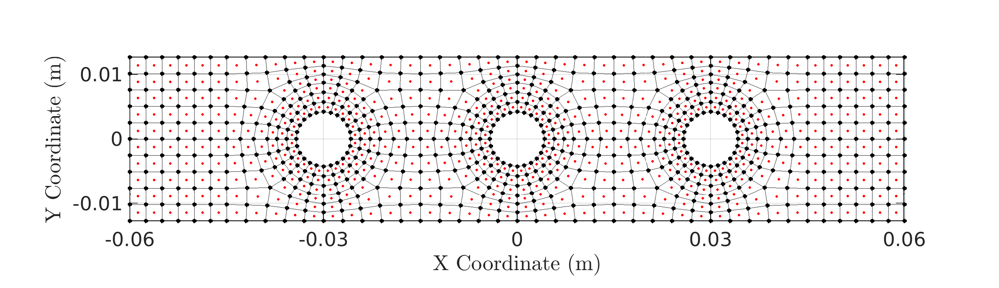
We now construct a matrix \(L_{rel}\) such that \(L_{rel}x_{cms}\) gives an \(N\times 1\) array of interfacial relative displacements in the normal direction. This is written based on the fact that the CMS model first lists out all the nodal DOFs of the top interface (\(x, y, z\), in that order), and then lists out the DOFs of the bottom interface nodes. So the relative normal displacement is defined as \(\Delta z:=x_{z,top}-x_{z,bot}\), such that \(\Delta z>0\) implies contact and \(\Delta z<0\) implies separation.
The following code derives the matrix \(L_{rel}\) to obtain the relative displacement at the quadrature location from the system's global vector of DOFs (CMS DOFs). Further, a matrix \(G_{rel}\) is also constructed such that \(G_{rel} t_{z,rel,QP}\) represents the nodal forces when \(t_{z,rel,QP}\) is the normal tractions at the quadrature points. Finally, nodal relative displacements are also computed (just for plotting purposes).
41: %% Contact Relative Displacements 42: Lz = kron(Qm, [0 0 1]); % Get only normal displacement 43: Lrel = [Lz -Lz zeros(Ne, Nint)]; 44: % Lrel defd such that Lrel*x>0 implies contact and Lrel*x<0 implies separation. 45: 46: Gz = kron(Tm, [0; 0; 1]); 47: Grel = [Gz; -Gz; zeros(Nint, Ne)]; 48: 49: % Nodal relative disp (only for plotting) 50: Lz_n = kron(eye(N), [0 0 1]); % Get only normal displacement 51: Lrel_n = [Lz_n -Lz_n zeros(N, Nint)];
Now we construct a null-space projection matrix \(L_n\) such that \(x_{cms} = L_n x_{nred}\), where \(x_{nred}\) is the null space reduced set of DOFs (\(N_{cms}-6\)). Note that the matrix \(L_1^T K L_1\) has only 6 RBMs (and not 7) since the interfaces have been stuck together by the \(L_1\) matrix.
52: %% Remove fixed interface null-space 53: L1 = null(Lrel); 54: [V,D] = eigs(L1'*K*L1, L1'*M*L1, 20, 'SM'); % Get first 20 modes 55: Ln = null(V(:, 1:6)'*L1'*M); % First six modes are RBMs 56: 57: Nn = size(Ln, 2); % Null-reduced DOFs
Now conduct the nonlinear prestress simulation using a uniform penalty stiffness of \(5\times 10^6 Pa m^{-1}\) (units of traction per displacement). The normal contact is simulated using a penalty stiffness formulation for simplicity.
58: %% Solve the Nonlinear Static Prestress Problem 59: bpmag = 12e3; 60: knl = 5e6/(Ar_tot/Ne); % knl divided by avg element area 61: U0 = (Ln'*K*Ln + (Grel'*Ln)'*(Lrel*Ln)*knl)\(Ln'*Fv*bpmag); 62: 63: opt = optimoptions('fsolve', 'specifyObjectiveGradient', true, ... 64: 'Display', 'iter'); 65: [U0, ~, ~, ~, J0] = fsolve(@(U) RESFUN([U; bpmag], Ln'*K*Ln, Ln'*Fv, ... 66: Lrel*Ln, Ln'*Grel, knl), U0, opt); 67: 68: %% Linearized Modal Analysis 69: [V0, D0] = eigs(J0, Ln'*M*Ln, 10, 'SM'); 70: W0 = sqrt(diag(D0)); 71: disp(table((1:10)', W0/2/pi, 'VariableNames', ... 72: {'Index', 'Frequency (Hz)'}))
The last few lines conduct a modal analysis from the prestressed state. As of the time of writing, convergence was observed in about 21 iterations (using MATLAB R2022a). This prints the following table of the elastic modes:
Index Frequency (Hz) 1 143.74 2 151.3 3 575.08 4 642.81 5 870.59 6 945.37 7 1130.3 8 1476.4 9 1701.3 10 1893.6
This completes the analysis, and the next two action points will do some plotting of the results.
Static Residue Routine RESFUN.m
The following routine returns the quasi-static residue for a given normal load. Only a unilateral spring is considered in the normal direction.
function [R, dRdU, dRdf] = RESFUN(Uf, K, Fv, Lc, Gc, knl) fnl_pred = knl*Lc*Uf(1:end-1); % Predicted normal force fnl = max(fnl_pred, 0); % Saturated @ 0: unilateral spring jnl = knl*Lc; % Jacobian jnl(fnl==0,:) = 0; % Static Residue R = K*Uf(1:end-1)+Gc*fnl - Fv*Uf(end); dRdU = K+Gc*Lc*knl; dRdf = -Fv; end
6.2.1. Plotting
We next construct a
MATLAB Graphobject using the element information and plot out the relative normal displacements at the interface as a graph.%% Depict Interfacial Displacement Field A = zeros(N); % Graph adjacency matrix for ei=1:Ne ndis = Elements(ei, 2:end); % Nodes of the current element A(ndis, ndis([2:end 1])) = A(ndis, ndis([2:end 1])) + eye(4); A(ndis([2:end 1]), ndis) = A(ndis([2:end 1]), ndis) + eye(4); end G = graph(A); figure(1) pos=get(gcf, 'Position'); set(gcf, 'Position', [pos(1:2) 900 320], 'Color', 'white') clf() plot(G, 'XData', Nodes(:,1), 'YData', Nodes(:,2), ... 'NodeCData', Lrel_n*Ln*U0, ... 'MarkerSize', 4, 'LineWidth', 3) colormap(jet) grid on axis equal axis tight set(gca, 'XTick', (-6:3:6)*1e-2) xlabel('X Coordinate (m)') ylabel('Y Coordinate (m)') xx=colorbar('SouthOutside'); xlabel(xx, 'Nodal Relative Displacement (m)', ... 'interpreter', 'latex', 'fontsize', 13)
The following is the output figure, showing the relative normal displacements at each node, with the nodes connected through the undirected graph constructed using the element information.

We can also plot the interfacial normal tractions by evaluating the contact model at the quadrature points and plotting them. Since we have just a single quadrature point per element, each element is filled in with a constant color. If multiple quadrature points are available, we can do a least-squares solve to obtain "nodal traction values", which will show the intra-element gradients also.
%% Show Pressure field pvals = max(knl*Lrel*Ln*U0, 0); % pressure @ QPs figure(3) pos=get(gcf, 'Position'); set(gcf, 'Position', [pos(1:2) 900 320], 'Color', 'white') clf() for ei=1:Ne ndis = Elements(ei, 2:end); % Nodes of the current element fill(Nodes(ndis,1), Nodes(ndis,2), pvals(ei)); hold on end colormap(jet) grid on axis equal axis tight set(gca, 'XTick', (-6:3:6)*1e-2) xlabel('X Coordinate (m)') ylabel('Y Coordinate (m)') xx=colorbar('SouthOutside'); xlabel(xx, 'Element Normal Pressure (Pa)', ... 'interpreter', 'latex', 'fontsize', 13)
Here is the output of the above plotting. The non-trivial normal traction distribution is clearly observed. Higher values of \(knl\) will obtain a better estimate of the "hard" contact results obtained from ABAQUS earlier. An alternative would be to implement a lagrange multiplier method for conducting hard contact simulations directly.

6.2.2. Miscellanies
- Even if all the nodes have equal areas, node-to-node contact elements are still inconsistent in this context, since contact interactions can be understood to be a fundamentally local interaction, which need to be integrated to have global influence. Quadrature-based integration of local tractions to nodal forces conducts exactly this. Please see this paper for a quadrature-based implementation for the BRB using a rought contact-based frictional model in the interface.
- You can quite easily implement a friction model also in
RESFUN.mabove. This, along with appropriately defined relative displacement matrices will be all you need to get started with your first nonlinear dynamic analysis (that may take more than just 100 lines of code, however ;-) )! You can look at this paper for a list of potential contact models to employ. - Do check out QSMA (Quasistatic Modal Analysis) and RQNM (Rayleigh Quotient-based Nonlinear Modal Analysis). These are two powerful quasi-static nonlinear modal analysis approaches that can be implemented using a routine that is not so much more complicated than the above. The advantage will be that using such cheap simulations, remarkable insights can be gathered about the (near-resonant) vibration behavior of the structure.
- It is often beneficial in this context to use relative coordinates at the interface (so we can get a 2x reduction in the total number of unknowns in the problem). You can do this in MATLAB on the HCB reduced model, or you can do this directly in the ABAQUS model by introducing ghost nodes representing the relative displacements. This is optional, but recommended - see instructions in cref:sec:relcsp.
7. Relative Coordinates Pipeline
In cref:sec:meshproc and cref:sec:mex, the true nodal DOFS of the interfacial nodes are extracted for the HCBCMS. Here, we instead extract the relative coordinates directly by introducing a set of ghost nodes at the interface whose DOFs are set to be equal to the difference between the DOFs of the top and bottom nodes. We achieve this by creating Reference Point instances at the appropriate locations and constraining them using the EQUATION constraint.
Note that we will first insert the reference points into the model (cref:sec:insrpt) and the write the resulting model into an inp file. I have been unable to figure out a way to do this fully natively with the cae model object, since the node IDs of the reference point instances don't seem to be available unless we are just about to do the analysis. If someone can figure this out, please write to me
We start with the file model_step1a.cae for this.
7.1. Insertion of Reference Point Instances Script
Load the cae file along with the necessary preamble.
1: import sys 2: import numpy as np 3: 4: from part import * 5: from material import * 6: from section import * 7: from assembly import * 8: from step import * 9: from interaction import * 10: from load import * 11: from mesh import * 12: from optimization import * 13: from job import * 14: from sketch import * 15: from visualization import * 16: from connectorBehavior import * 17: 18: from abaqus import * 19: from abaqusConstants import * 20: from caeModules import * 21: import regionToolset 22: import job 23: import step 24: import sets 25: 26: from inpParser import * 27: 28: mdbm = openMdb('./model_step1a.cae') 29: mdl = mdbm.models['Model-1'] 30: ras = mdl.rootAssembly 31: 32: mdl.setValues(noPartsInputFile=ON)
Get the nodes of only the top surface
33: topsurf = ras.instances['TOPBEAM'].surfaces['INSURF'] 34: topnodes = topsurf.nodes 35: N = len(topnodes) # Number of nodes 36: # Top Nodes & Coordinates 37: Topnd_dict = dict(zip([topnodes[i].label for i in range(N)], range(N))) 38: TopNdCds = np.array([topnodes[i].coordinates for i in range(N)])
Import the reference point (partname:
REFPT) as instances into the assembly and move them to the nodal locations.39: rpt = mdl.parts['REFPT'] 40: for i in range(N): 41: ras.Instance(name='RELPT-%d' %(i+1), part=rpt, dependent=OFF) 42: ras.translate(instanceList=('RELPT-%d' %(i+1), ), vector=topnodes[i].coordinates)
Create a set of the reference points, then simplify the model, and save the resulting model to an inp file. The name of the resulting inp file will be
MeshedModel.inp.43: ras.Set(name='RELCSET', 44: referencePoints=[ras.instances['RELPT-%d' %(i+1)].referencePoints[1] 45: for i in range(N)] ) 46: 47: tmp = mdl.interactions 48: while len(tmp) > 0: 49: del tmp[tmp.keys()[-1]] 50: 51: tmp = mdl.interactionProperties 52: while len(tmp) > 0: 53: del tmp[tmp.keys()[-1]] 54: 55: # Remove all steps except initial 56: tmp = mdl.steps 57: while len(tmp) > 1: 58: del tmp[tmp.keys()[-1]] 59: 60: #### 5. Create a Job and write an inp file 61: mdbm.Job(name="MeshedModel", model='Model-1') 62: mdbm.jobs['MeshedModel'].writeInput() 63: 64: mdbm.close()
7.2. Process the inp-file model, renumber the bottom nodes, and conduct HCBCMS.
We first read in the inp file we saved in the above.
1: import sys 2: import numpy as np 3: 4: from part import * 5: from material import * 6: from section import * 7: from assembly import * 8: from step import * 9: from interaction import * 10: from load import * 11: from mesh import * 12: from optimization import * 13: from job import * 14: from sketch import * 15: from visualization import * 16: from connectorBehavior import * 17: 18: from abaqus import * 19: from abaqusConstants import * 20: from caeModules import * 21: import regionToolset 22: import job 23: import step 24: import sets 25: 26: from inpParser import * 27: 28: mdl = mdb.ModelFromInputFile(name='Model-1', 29: inputFileName='./MeshedModel.inp') 30: ras = mdl.rootAssembly
Following a process similar to that in cref:sec:meshproc, we renumber and align the bottom surface nodes to match the top surface nodes. Note that since we have read the model from the inp file, all set names are fully upper case, and the concept of instances does not exist any more.
31: topsurf = ras.surfaces['TOPBEAM_INSURF'] 32: botsurf = ras.surfaces['BOTBEAM_INSURF'] 33: 34: topnodes = topsurf.nodes 35: botnodes = botsurf.nodes 36: N = len(topnodes) # Number of nodes 37: Topnd_dict = dict(zip([topnodes[i].label for i in range(N)], range(N))) 38: TopNdCds = np.array([topnodes[i].coordinates for i in range(N)]) 39: 40: # Top Elements 41: TopEls = np.array([topsurf.elements[i].connectivity 42: for i in range(len(topsurf.elements))]) 43: ELS = np.zeros((TopEls.shape[0], 5), dtype=int) 44: for ne in range(TopEls.shape[0]): 45: elefac = topsurf.elements[ne].getElemFaces() 46: 47: # Gives you the list of faces on the interface (we only expect a single face) 48: fe = np.argwhere([all([Topnd_dict.has_key(x) for x in 49: [elefac[k].getNodes()[i].label for i in range(4)]]) 50: for k in range(6)])[0,0] 51: ELS[ne, 0] = ne 52: # Searches for & returns the face where all the nodes are in the interface 53: ELS[ne, 1:] = [Topnd_dict[x] for x in [elefac[fe].getNodes()[k].label 54: for k in range(4)]] 55: ELS[ne, :] += 1
Resort the bottom nodes
56: # Re-sort the bottom nodes 57: botleft = range(N) 58: bts = [] 59: tmi = 0 60: for i in range(N): 61: # Calculates deviation of selected node coordinate on bottom to each 62: # node coordinate on top and "assigns" the closest one to the index. 63: bts.append( 64: botleft.pop( 65: np.argmin( 66: np.linalg.norm( 67: topnodes[i].coordinates-np.array([botnodes[j].coordinates 68: for j in botleft]), 69: axis=1) 70: ) 71: ) 72: ) 73: 74: # Adjust Nodes on Bottom Beam Interface to Match Top Beam Exactly 75: for i in range(N): 76: ras.editNode(nodes=botnodes[bts[i]:bts[i]+1], 77: coordinates=(topnodes[i].coordinates,)) 78:
Create node sets for the top, bottom and relative coordinates.
79: botpairednds = botnodes.sequenceFromLabels(tuple([botnodes[i].label for i in bts])) 80: # Reordering from the sorting above 81: 82: ras.SetFromNodeLabels(name="TOPS_NDS", 83: nodeLabels=((topnodes[0].instanceName, 84: tuple([topnodes[i].label for i in range(N)])),), 85: unsorted=True) 86: ras.SetFromNodeLabels(name="BOTS_NDS", 87: nodeLabels=((botpairednds[0].instanceName, 88: [botpairednds[i].label for i in range(N)]),), 89: unsorted=True) 90: rlcn = ras.sets['RELCSET'].nodes 91: ras.SetFromNodeLabels(name="RELCSET", 92: nodeLabels=((rlcn[0].instanceName, 93: [rlcn[i].label for i in range(N)]),), 94: unsorted=True)
We now set equation constraints to set a meaning for the ghost nodes. It is possible to provide sets as inputs to the Equation constraint (each node is taken as-ordered).
95: for i in range(3): 96: mdl.Equation(name='RELCS-%d' %(i+1), 97: terms=((1.0, 'TOPS_NDS', i+1), 98: (-1.0, 'RELCSET', i+1), 99: (-1.0, 'BOTS_NDS', i+1)))
The constraint represented by the above is \[ u^{(i)}_{RELCSET} = u^{(i)}_{TOP} - u^{(i)}_{BOT} \implies u^{(i)}_{TOP} - u^{(i)}_{RELCSET} - u^{(i)}_{BOT} = 0 \]
We next setup the "fixed interface" CMS by conducting a Frequency step while constraining all the DOFS of the
RELCSETnodeset to be zero (interface stuck against each other).100: mdl.FrequencyStep(name="Fixed-Int-Modal", previous="Initial", 101: normalization=MASS, eigensolver=LANCZOS, 102: numEigen=60) 103: mdl.EncastreBC(name="RELFIX", createStepName="Fixed-Int-Modal", 104: region=ras.sets['RELCSET'])
The substructuring step is finally setup. We request 6 more modes in
modeRangesince the "fixedInterface= model will have 6 Rigid Body Modes which don't add anything to model accuracy. So if 20 generalized modes are desired, we ask for 26.105: mdl.SubstructureGenerateStep(name="HCBCMS", previous="Fixed-Int-Modal", 106: substructureIdentifier=1, 107: retainedEigenmodesMethod=MODE_RANGE, 108: modeRange=((1, 26, 1),), 109: recoveryMatrix=REGION, 110: recoveryRegion=ras.sets['OUTNODES'], 111: computeReducedMassMatrix=True) 112: 113: mdl.RetainedNodalDofsBC(name="A", createStepName="HCBCMS", 114: region=ras.sets['RELCSET'], 115: u1=ON, u2=ON, u3=ON) 116: 117: # Apply Bolt Loads (1N magnitude) 118: for i in range(1, 4): 119: mdl.ConcentratedForce(name='BoltLoad-%d' %(i), createStepName="HCBCMS", 120: cf3=1.0, region=ras.sets['BPT-%d_SET-1' %(i)]) 121: mdl.ConcentratedForce(name='NutLoad-%d' %(i), createStepName="HCBCMS", 122: cf3=-1.0, region=ras.sets['NPT-%d_SET-1' %(i)]) 123: 124: sbs = mdl.steps['HCBCMS'] 125: sbs.LoadCase(name="LCASE", loads=tuple(('BoltLoad-%d' %(i), 1.0) 126: for i in range(1, 4)) + 127: tuple(('NutLoad-%d' %(i), 1.0) for i in range(1, 4)))
We complete the task by requesting matrix output and outputting node and element information.
128: # ABAQUS CAE doesn't support this yet (GUI or scripting), 129: # so the keywords need to be manually modified. 130: mdl.keywordBlock.synchVersions(storeNodesAndElements=False) 131: li = np.argwhere([mdl.keywordBlock.sieBlocks[i][0:20] == "*Retained Nodal Dofs" 132: for i in range(len(mdl.keywordBlock.sieBlocks))])[0][0] 133: txi = mdl.keywordBlock.sieBlocks[li] 134: mdl.keywordBlock.replace(li, "*Retained Nodal Dofs, sorted=NO"+txi[20:]) 135: mdl.keywordBlock.insert(len(mdl.keywordBlock.sieBlocks)-2, 136: "*Substructure Matrix Output, FILE NAME=Modelmats, 137: MASS=YES, STIFFNESS=YES, SLOAD=YES, RECOVERY MATRIX=YES") 138: 139: # Create a job and write an inp file 140: mdb.Job(name="HCBCMSJob", model='Model-1') 141: mdb.jobs['HCBCMSJob'].writeInput() 142: 143: # Save interfacial nodes & elements to txt files 144: np.savetxt('Nodes.dat', TopNdCds) # Save to dat file 145: np.savetxt('Elements.dat', ELS, fmt='%d')
- The inp file "HCBCMSJob.inp" can be run just as before, and it will generate an mtx file named "Modelmats.mtx".
- The script readwritematvec.sh can be used to post process this mtx file just as before.
7.3. Nonlinear Prestress Analysis with MATLAB/OCTAVE
- The same MATLAB/OCTAVE routines from cref:sec:nlan can be used here, with minor tweaks to account for the fact that the model is already in the relative coordinates frame.
Everything in the preamble is identical to before:
1: clc 2: clear all 3: 4: set(0,'defaultAxesTickLabelInterpreter', 'default'); 5: set(0,'defaultTextInterpreter','latex'); 6: set(0, 'DefaultLegendInterpreter', 'latex'); 7: set(0,'defaultAxesFontSize',13); 8: 9: %% Read Nodes and Elements 10: Nodes = dlmread('./Nodes.dat'); 11: Elements = dlmread('./Elements.dat'); 12: N = size(Nodes,1); % Number of nodes per side 13: Ne = size(Elements,1); % Number of elements 14: 15: %% Load Matrices 16: fname = './Modelmats.mat'; 17: load(fname, 'M', 'K', 'R', 'Fv'); 18: 19: % Number of generalized modal DOFs 20: Nint = size(M,1)-N*3; 21: 22: %% Single-Point-Quadrature Matrices 23: Qm = zeros(Ne, N); % Each element has one quadrature point 24: Tm = zeros(N, Ne); % Each quadrature pt integrated to 4 nodes 25: Ars = zeros(Ne, 1); % Vector of areas of each element 26: for ei=1:Ne 27: ndis = Elements(ei, 2:end); % Nodes of the current element 28: Qm(ei, ndis) = ones(1, 4)/4; 29: % value @ QP = avg of nodal values 30: 31: Ars(ei) = polyarea(Nodes(ndis,1), Nodes(ndis,2)); 32: 33: Tm(ndis, ei) = ones(4, 1)*Ars(ei)/4; 34: % (integrated) nodal value = value @ QP times element Area/4 35: end 36: % Qm is quadrature interpolation matrix 37: % Tm is quadrature integration matrix 38: 39: Ar_tot = 120e-3*25.4e-3-3*pi*(0.85e-2/2)^2; % True total area 40: % Rectangle-3*Circles 41: Ar_avg = Ar_tot/Ne; % Average element area
Since the DOFs are already relative displacements, we directly use the Quadrature matrices for the extraction:
42: %% Contact Relative Displacements (DOFS already in relative coordinates 43: Lz = [kron(Qm, [0 0 1]) zeros(Ne, Nint)]; % Get only normal displacement 44: Gz = [kron(Tm, [0; 0; 1]); zeros(Nint, Ne)]; 45: 46: % Nodal relative disp (only for plotting) 47: Lz_n = [kron(eye(N), [0 0 1]) zeros(N, Nint)]; % Get only normal displacement
Just as before, we use the null-space to get a well-posed formulation, and then conduct the nonlinear prestress analysis (
RESFUN.mis the same as before).48: %% Remove fixed interface null-space 49: L1 = null(Lz); 50: [V,D] = eigs(L1'*K*L1, L1'*M*L1, 20, 'SM'); % Get first 20 modes 51: Ln = null(V(:, 1:6)'*L1'*M); % First six modes are RBMs 52: 53: Nn = size(Ln, 2); % Null-reduced DOFs 54: 55: %% Solve the Nonlinear Static Prestress Problem 56: bpmag = 12e3; 57: knl = 5e6/(Ar_tot/Ne); % knl divided by avg element area 58: U0 = (Ln'*K*Ln + (Gz'*Ln)'*(Lz*Ln)*knl)\(Ln'*Fv*bpmag); 59: 60: opt = optimoptions('fsolve', 'specifyObjectiveGradient', true, ... 61: 'Display', 'iter'); 62: [U0, ~, ~, ~, J0] = fsolve(@(U) RESFUN([U; bpmag], Ln'*K*Ln, ... 63: Ln'*Fv, Lz*Ln, Ln'*Gz, knl), U0, opt); 64: 65: %% Linearized Modal Analysis 66: [V0, D0] = eigs(J0, Ln'*M*Ln, 10, 'SM'); 67: W0 = sqrt(diag(D0)); 68: disp(table((1:10)', W0/2/pi, 'VariableNames', {'Index', 'Frequency (Hz)'}))
Here is the results of the linearized modal analysis:
Index Frequency (Hz) 1 143.74 2 151.3 3 575.05 4 642.77 5 870.5 6 945.57 7 1130.3 8 1475.6 9 1700.1 10 1896.2 Comparing this with the predictions from before indicate a very close agreement.
7.3.1. Plotting Results
We use the following modified version of the plotting code to visualize the response:
1: %% Depict Interfacial Displacement Field 2: A = zeros(N); % Graph adjacency matrix 3: for ei=1:Ne 4: ndis = Elements(ei, 2:end); % Nodes of the current element 5: A(ndis, ndis([2:end 1])) = A(ndis, ndis([2:end 1])) + eye(4); 6: A(ndis([2:end 1]), ndis) = A(ndis([2:end 1]), ndis) + eye(4); 7: end 8: G = graph(A); 9: 10: figure(1) 11: pos=get(gcf, 'Position'); 12: set(gcf, 'Position', [pos(1:2) 900 320], 'Color', 'white') 13: clf() 14: plot(G, 'XData', Nodes(:,1), 'YData', Nodes(:,2), ... 15: 'NodeCData', Lz_n*Ln*U0, ... 16: 'MarkerSize', 4, 'LineWidth', 3) 17: colormap(jet) 18: grid on 19: axis equal 20: axis tight 21: set(gca, 'XTick', (-6:3:6)*1e-2) 22: xlim([-1 1]*6e-2) 23: ylim([-1 1]*1.27e-2) 24: xlabel('X Coordinate (m)') 25: ylabel('Y Coordinate (m)') 26: xx=colorbar('SouthOutside'); 27: xlabel(xx, 'Nodal Relative Displacement (m)', 'interpreter', 'latex', 'fontsize', 13) 28: 29: print('./intdisps_rc.png', '-dpng', '-r300') 30: 31: %% Show Pressure field 32: pvals = max(knl*Lz*Ln*U0, 0); % pressure @ QPs 33: figure(2) 34: pos=get(gcf, 'Position'); 35: set(gcf, 'Position', [pos(1:2) 900 320], 'Color', 'white') 36: clf() 37: for ei=1:Ne 38: ndis = Elements(ei, 2:end); % Nodes of the current element 39: fill(Nodes(ndis,1), Nodes(ndis,2), pvals(ei)); hold on 40: end 41: colormap(jet) 42: grid on 43: axis equal 44: axis tight 45: set(gca, 'XTick', (-6:3:6)*1e-2) 46: xlabel('X Coordinate (m)') 47: ylabel('Y Coordinate (m)') 48: xx=colorbar('SouthOutside'); 49: xlabel(xx, 'Element Normal Pressure (Pa)', 'interpreter', 'latex', 'fontsize', 13) 50: 51: print('./intpress_rc.png', '-dpng', '-r300')
- Here are the results
Nodal Displacements:
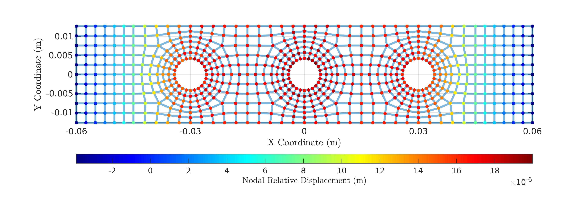
Interfacial Pressures:
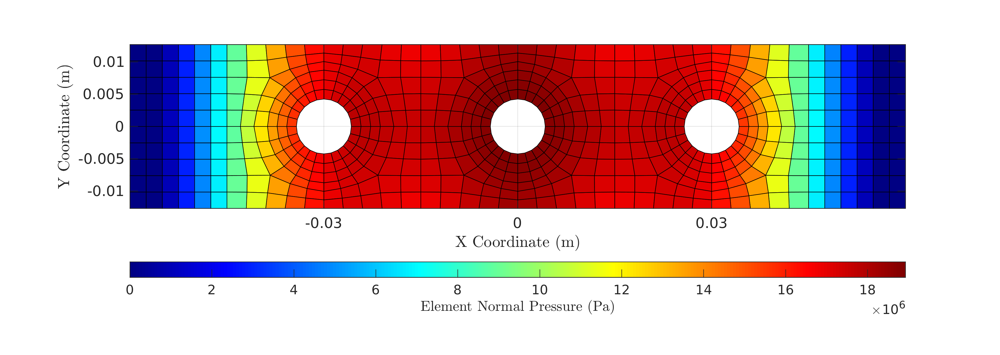
- The results can be seen to be almost nearly identical to those shown before.
- Computationally the advantages are clear. The size of the model matrices with relative coordinates is 2078, while the size without is 4136. Using the relative DOF-coordinates, therefore, one can achieve an almost 2x reduction in system size, which is beneficial in every form of analysis.
8. Outro/Contact
You can contact me at nidish@iitm.ac.in or nidbid@gmail.com for any questions/suggestions. Don't forget to check out the repository in github at https://github.com/Nidish96/Abaqus4Joints.
If you found this useful, please consider citing this paper and/or this thesis.
8.1. Summary
All the scripts used in the tutorial are provided in
- a_steelmat.py: Loading material
- b_halfbm.py: Building the half-beam model
- c_nutwasherbolt_516.py: Building the bolt, nut, and washer models.
- d_applyconstraints.py: Applying the relevant constraints and introducing bolt prestress.
- e_nodeproc.py: The postprocessing script create surface node sets and setting up substructure analysis.
- Files d1_relcs.py and e1_relcsnproc.py provide replacements for files 4 & 5 above while using relative coordinates.
- readwritematvec.sh: Contains the mtx reading script written with
bashandpython. - main.m: Contains the MATLAB/OCTAVE file for doing the nonlinear static prestress analysis (also see RESFUN.m for the residue routine).
- main_rc.m: Contains the MATLAB/OCTAVE file for the nonlinear static prestress analysis using the relative coordinates representation.
The Github repository has the above scripts as well as all the cae files.
8.2. Details on this web-page documentation/offering suggestions
- This website was generated using org-mode on emacs with the Bigblow html theme from https://github.com/fniessen/org-html-themes. The collapsible details blocks from org-special-block-extras have also been used extensively.
- The best way to offer suggestions would be to use the pdf version of the documentation, annotate it and mail it to me. Alternately, you can also clone the repository, make changes and create a pull request.